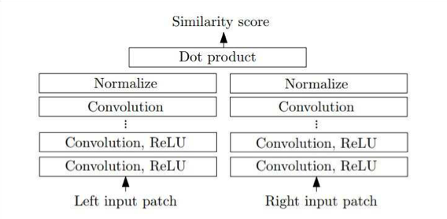
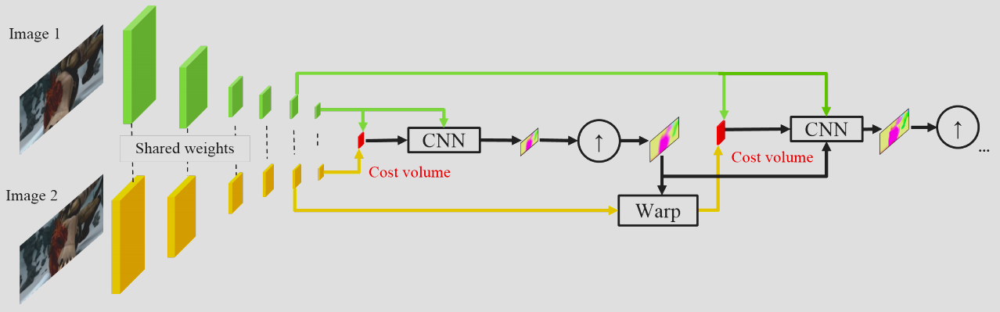

Stereo
Basic Stereo algorithm can be formulated as Markov Random Field.
Thus Methods in MRF inference could all be used. Prior
Planar Prior
Natural scene is usually piece-wise! How to impose this idea to depth map?
So basic procedure:
- Do disparity map $D(x,y)$
- Run SGM type MRF inference algorithm, get a initial depth estimate
- Use super-pixel clustering to find a region of pixel that may lie on a single plane.
- Do a smooth plane fit to the initial depth
2013 ECCV
SLIC cost \(\alpha\|I[n]-\mu^i_k\|^2+\beta\|n-\mu^s_k\|^2+\gamma\|d^0[n]-\alpha_kn_x-\beta_kn_y-\gamma_k\|^2\) For each cluster it has parameters $\mu^i_k,\mu^s_k,\alpha_k,\beta_k,\gamma_k$ mean pixel value, mean spatial location and the plane going through it.
SLIC essentially is a K-means clustering, so it’s iteratively doing
- Assign pixel to cluster
- Fit the parameters for the cluster.
- Here we will find the mean pixel value, plane parameters.
What’s the right superpixel size? Can’t be too small or too large.
Superpixel MRF
Maybe run MRF on the superpixels! And merge then iteratively.
Continuous Markov Random Fields for Robust Stereo Estimation
Graph Construction
-
Each superpixel is a node. Each node has 3 parameters, $y_k=[\alpha_k,\beta_k,\gamma_k]$ .
-
Unary cost, is the residue of the planar fit to the depth at this pixel. $|d^0[n]-\alpha_kn_x-\beta_kn_y-\gamma_k|$
-
Construct a graph with all neighboring superpixels sharing an edge, with an additional label $o_{ij}$ describing the geometric relationship of the 2 planes.
- The label is a discrete label define the states, and the costs come in $\phi(o_{ij},y_i,y_j)$
- Note this could be extend naturally to 3-way junction and 4-way clique and enforce geometric constraint on it.
Geometric Relationships
- Co-planar: Mean depth difference between the 2 plane over all pixels of union ($P_1\cup P_2$)
- $$
- Hinge: Mean depth difference between the 2 plane over all pixels on boundary ($P_1\cap P_2$)
- $$
- Occlusion: left occlusion, right occlusion. If there is pixel on the boundary that the front patch gives a larger depth value than the back patch.
- $$
Thus you get a huge hybrid MRF!
Tricks for Inference
- Particle belief propagation for continuous variables:
- Use discrete samples to represent the distribution. Resample after each round of BP. Decrease the std of Gaussian sampling each time.
- Use factor graph to turn 3 way relationship back to binary graph.
- Use library of MRF solver it will work ! (SOTA! 2012)
Note, if you can define your MRF, then solving MRF has established libraries, which is powerful.
Hierarchical MRF
Thoughts: Why do we need superpixels?
- MRF cannot be too large!
- SLIC is dirty but fast!
May be we can make this multi-scale
Lower level vision by consensus in a spatial hierachy of regions
Use a hierarchy of multi-scale overlapping patches, $S={4,8,16,32}$, $stride=1$ .
Use a parameter $I_i$ to describe if it’s planar or not! And a parameter $\theta_i$ describing the planar parameters.
Alternatively updating ${I_i,\theta_i}$ and $d_i$
- Updating ${I_i,\theta_i}$ ,
- Updating $d_i$ pixelwise independent, i.e. find mean of the depth estimation across all patches covering this pixel AND is planar.
Still too computational intense! Regular square patch can help us, all these computation could be done in convolution!
- Besides, using $log_2$ scale will help us aggregate information across scale. As downsampling will help you do multi-scale
Plane Sweep Stereo
More than 2 image, How
Rectification Trick: If you have 2 cameras, rotate one of them to make the sight center align. But doesnt work
- If we know the poses of the multiple cameras, we could build a grid model of the world, $(x,y,z)$
- Descritize $z$ by uniform interval in $1/z$ space.
- Each point in the world, correspond to a point $(x_i^A,y_i^A)$ in each camera view.
-
You can compute consistency between the point pairs.
- 3 cameras or more cameras may give you more pairs, (point is occluded in B but not in AC so AC can still fit a match )
Monocular Flow
Multiple images or 2 images from a moving camera is kind of equivalent!
Simplest case, fixed physical world, only camera is moving!
Note: Optical flow doesn’t provide the depth per se.
- If you don’t know your camera’s speed or movement, moving camera at 2 speed ~ objects are 2 times far away.
- So if you only know direction of movement, then you know depte Up to a scaling factor
Planar model trick $1/z=\alpha x+\beta y+\gamma\propto d[x,y]$
If only one moving object, IT’s EQUIVALENT to epipolar system.
- Moving is relative, no matter the object or camera.
If multiple moving object.
- Chop the frame into more than one patch, so that one object in one patch, and each object is its own epipolar system.
- Finally you can estimate
Finally, you get all the components into a giant MRF.
Scene Flow
????? Piecewise rigid motion
Cycle consistency.
IJCV 2015 3D scene flow estimation with a pievewise rigid scene model
Still pre-CNN method, but CNN doesn’t do much better than this for a long time.
Optical Flow
First problem is finding correspondence! Theoretically, you want to build a 4d cost volume $C[x,y,dx,dy]$ , if there exist large movement, this volume will be infeasible to process.
PatchMatch
Core of PatchMatch is a randomized search algorithm. Use neighbor and random sample as a heuristic guess.
- Initialize the flow value $f(x,y)=[u(x,y),v(x,y)]$, randomly, or
- Iteratively, check the answers of neighbors $f(x-1,y),f(x,y-1),(x+1,y),f(x,y+1)$ and a random value within a distance
- Check if any displacement reduce the cost. If do, adopt the answer.
Work super well in practice….
Comment:
- Here, smooth is not an constraint, but as a heuristic of good answer, by giving search preference to answers of neighbors.
Hierarchical Optical Flow
CVPR 2016 Efficient Coarse to fine PatchMatch for Large Displacement Optical Flow
Building image pyramid, apply patch match from a coarse to fine level, use the answer at coarse level, resize to initialize the fine level PatchMatch
- Up sampling, initialize your finer level search, and restrict your search around the initialization!
EpicFlow
CVPR 2015
Sparse to dense estimation, estimate the flow value for each object.
Was State of the art at 2015~
In the heart, it’s like a flow denoising / flow inpainting problem.
- Require the flow value match the sparse estimation.
- Require smoothness
-
Loosen the smooth constraint when edge is detected in the image. (~ The content aware image prior)
- Add a post processing step, minimize Lucas-Kandae energy by perturbing (Taylor Expansion) around the input flow map.
CNN based method
Overall theme, inspired by traditional methods, replace some components by NN.
CNN Matching Cost Stereo
Replacing the matching cost by CNN, can already boost a huge improvement! ($f$ )
CNN can be a better model of the low level image statistics and image metric.
Stereo Matching by Training a CNN to compare image patch
How to train such network?
- Learn a similarity score of patch, by constructing a triplet loss.
- Reference patch, true matched patch, and a wrong one along the same epipolar line.
- Use a Hinge Loss function $L = \max(0, m+d(I_r,I_c) -d(I_r,I_w))$
Network structure: Siamese Network
Siamese means twins conjoined at one point.

Pyramid Stereo Matching NN stereo
Feature vector for each pixel for left and right image,
2018 CVPR Pyramid Stereo Matching Network
Use a weight sharing CNN to encode feature,
Build cost volume and do 3D Convolution to process cost volume.
Loss
- Note, soft-max gives a probability distribution.
- Note, it’s usually better to produce a distribution of value (like belief), instead of a single best one.
-
However you want a regression type loss! Not just classification
-
Do the loss on the expectation of the distribution formed by soft-max.
- $\sum_0^{D-1}SoftMax(s[x,y,d])*d$
Maybe use distribution, and compute distribution Expectation and do loss is a trick.
- Huber loss: Use quadratic loss for small difference, L1 loss for large difference, make it more robust.
-
$L=0.5x^2\ if\ x <1;L= x -0.5\ if\ x >1$ - a mixture of L1 and L2 loss.
-
Supervision
- You can add supervision to intermediate layers.
PWC-Net: NN Optical Flow
The biggest issue in large displacement optical flow is the potential choices (match) is too large. cmp. to stereo when displacement is usually small.
PWC-Net: CNN for Optical FLow Using Pyramid, Warping and Cost Volume
Hierarchical processing and pyramid is a classical way to deal with large number of match. Ref to Hierachical Optical Flow
- Convolution (with stride) automatically provides you a feature pyramid of different resolutions!
- Then you can do matching at different level of this pyramid
- You go from coarse to fine, and up sample your low resolution result (as initial guess)

- Note you need some warping operation, i.e. look up the value around the “flowed” index, and fetch those value back around you to continue the search.
- $F^{t+1}_w[x,y,f]=F^{t+1}[x+u[x,y],y+v[x,y],f]$
- Note: BackProp through Warping layers is tricky and needs some care.
- Without backprop to $u,v$ flow vector field, you can never train a network to perform optical flow.
- We need to treat $u[x,y]$ as a real value, and use bilinear interpolation to find dependency of output on $u$
2015 NIPS Spatical Transformation Network
In essense we do a bilinear interpolation, then we can differentiate.
- In bilinear interpolation, $h(x,y)=h(i,j)+h(i, )$
And Bilinear interpolation could be done through convolution!
-
Create a mask $k(x,y)=\max(0,1- x )\max(0,1- y )$ - Then $h=\sum_{x’,y’}k(x’-c_x,y’-c_y)g[x’,y’]$
Spatial transformer network is super useful tool
Note backprop through the warping layer to flow, is like doing a local search for better match! Which may not be efficient. Doing bilinear interpolation at a larger
Monocular depth estimation
Highly ill-posed, but human can do it………
Some lessons from human perception, cues for monocular depth
- Shading,
- Contour
- Texture
- Familiar object
Note, you need a large RF to get and process information in global scale to make sense. (human cannot know shape / depth from very local fragments. )
Eigen et al., “Depth map prediction from a single image using a multi-scale deep network.” NIPS 2014.
Wang et al., “Towards unified depth and semantic prediction from a single image.” CVPR 2015
- Reasoning about depth and semantics boundary seems to help each other. (esp. in single image)
Chakrabarti et al., “Depth from a Single Image by Harmonizing Overcomplete Local Network Predictions.” NIPS 2016
Collect Depth Dataset
Collecting ground truth is hard which is also challenging.
- All data type is kind of biased towards some scenario
- Kinect works for indoor
- LADAR works for outdoor, where car can drive.
- Human cannot label precise depth! So MTurk doesn’t annotate everything.
- but human can estimate relative depth and surface normal.
- These feedback easily generated by human can be used to train a model.